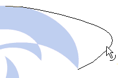

Editing Vectors in Flash


If you do not have a Vector drawing program, like Freehand or Illustrator, you can edit your vectors directly in Flash.
To edit your vector, first select the object, and press CTRL + B to break it up.
Now, hold your mouse over the edge of an object. The mouse pointer will change to either an arrow with a curve or a line.

If you have the "snap" feature checked, you can also "unite" two corners of a vector.
That's about it.